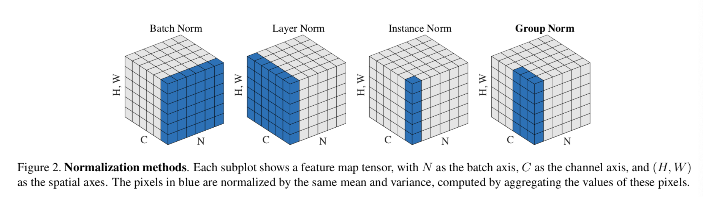

BatchNormalization的作用机制
推理过程
对于深度神经网络中的一层，可以表示为$o = g(x),\ x=wl + b$，其中$w,b$是该层的参数，$l$是该层的输入，$g$表示激活函数，$o$表示该层输出。
在提出BN的原始论文《Batch Normalization: Accelerating Deep Network Training byReducing Internal Covariate Shift》中，BN层是加在每一层的激活函数之前的，即对上面的$x$进行操作。
BN层的操作有两步：
- 首先对数据进行归一化（normalize）：设$\mu$，$\sigma^2$分别是$x$的均值和方差，归一化之后的$x$变为$\hat{x} = \frac{x - \mu}{\sqrt{\sigma^2 + \epsilon}}$，其中$\epsilon$是个防止分母为零的平滑项，
- 然后对归一化的数据进行scale和shift（transform）：$\gamma \hat{x} + \beta$，最终该层加入BN之后，表达式变为$o = g(\gamma \hat{x} + \beta)$
这里先不管$\mu,\ \sigma^2,\ \epsilon,\ \beta$怎么得到，上面的操作看起来非常简单，不过这里有一点细节：一般情况下，这里的$x,\ x_i,\ \mu,\ \sigma^2,\ \epsilon,\ \gamma,\ \beta$全都是向量，因为一个样本由多个特征构成，BatchNormalization其实是对每个特征进行normalize和transform，因此上面涉及到的计算，其实全都是逐元素运算，如果是对于图像数据，在CNN中的BatchNormalization其实是将特征图上的每个点当做一个样本的，例如一个$N\times H\times W\times C$大小的特征图（$N$是batch size），那么其中$1\times 1 \times 1 \times C$的一个点就被当成一个样本，其包含$C$个特征，所有样本共用$C$个均值和方差。
训练过程
对于BatchNormalizatioin层，训练过程其实就是确定$\mu,\ \sigma^2,\ \gamma,\ \beta$的过程。
首先，对于$\mu,\ \sigma^2$，在训练过程中，对于每一个batch的数据，我们可以得到$\mu_B = \frac{1}{m}\sum\limits_{i=1}^m x_i$，$\sigma^2_B = \frac{1}{m}\sum\limits_{i=1}^m(x_i -\mu)^2$作为当前batch数据的均值和方差，其中$m$是一个batch中的样本数，下标$i$表示某个样本，训练是迭代进行的，为了得到对所有数据的均值和方差，需要使用一些方法根据$\mu_B,\ \sigma^2_B$来估计整体数据的均值和方差。
在主流的深度学习框架（tensorflow、pytorch）中，一般使用滑动平均来进行估计：
将变量$\mu,\ \sigma^2$初始化为$\mu_0,\ \sigma^2_0$，因为每次迭代处理一个batch的数据，均可以得到$\mu_B,\ \sigma^2_B$，第$k$次迭代时，更新$\mu_k = \alpha\mu_{k-1} + (1-\alpha)\mu_B,\ \sigma^2_k = \alpha\sigma^2_{k-1} + (1-\alpha)\sigma^2_B$，其中$0 < \alpha < 1$是滑动平均的滑动速率，训练完成之后，假设一共迭代了$K$次，则令$\mu = \mu_K,\ \sigma^2 = \sigma^2_K$，即可用于推理过程。
对于$\gamma,\ \beta$两个参数，在训练过程中，将其和$w,\ b$一样，使用优化器根据梯度进行更新即可。
BatchNormalization的推理加速
将BatchNormalization的两个步骤结合起来，可以得到：
可以发现，在模型训练完成之后，如果仅需要使用模型进行推理，则可以将$\frac{\gamma w}{\sqrt{\sigma^2 + \epsilon}}$保存为该层的$w$参数，将$\frac{\gamma b -\gamma \mu}{\sqrt{\sigma^2 + \epsilon}}+ \beta$保存为该层的$b$参数。这样在推理过程中完全不增加计算量。
有一种说法是如果使用了BatchNormalization，则该层的偏置参数$b$可以省略掉，这也是根据上式得来的，因为BatchNormalization中包含了一个可学习的$\beta$项，完全可以替代$b$参数的效果，而且不影响模型的表达能力。
BatchNormalization的理解
原论文中认为：BatchNormalization可以让深度神经网络使用更大的学习速率训练以达到加速收敛的目的。
论文中作者解释说是因为深度神经网络在训练过程中，由于前一层参数变化，导致每一层的输入分布不断发生变化，这种情况在论文中被称为“internal convariate shift”，BatchNormalization的作用是缓解这种“internal convariate shift”：通过强行将激活之前的特征进行减平均除方差的操作，使得特征均值为0，方差为1，让激活之后的输出，即下一层的输入，维持在一个相对稳定的分布中。
但是在该论文中，作者又说如果简单的将某一层的激活函数的输入进行normalize，会改变该层的表示能力（原文：Note that simply normalizing each input of a layer may change what the layer can represent. For instance, nor-malizing the inputs of a sigmoid would constrain them tothe linear regime of the nonlinearity.），因此需要在normalize之后，再对其进行transform。
这里的transform之后，如果不是接近于0均值，1方差的，那之前的normalize就白做了，原论文中也明确说了transform有能力将之前的normalize的效果完全还原，所以原论文得出的结论是这样一来模型可以选择是否进行normalize，相当于增强了模型的表达能力。
我对这里的理解是：BatchNormalization先将特征变换到0均值，1方差，再transform到$\beta$均值，$\gamma$标准差，这样一定程度上可以让模型来显式地选择特征的均值和方差，可以让数据的分布向更加适合随机初始化的权重的位置靠拢（否则就需要单方面调整随机初始化的权重来适应数据的分布，这样显然需要更长时间的训练），因此BatchNormalization有缩短收敛时间的效果，也可以说是减小了对参数初始化的依赖，另外，BN层的先normalize再transform的操作，如果通过$\beta$和$\gamma$将特征的均值和方差限定在一定范围，一定程度上是对模型表达能力的一种限制，有一定的类似正则化的作用，一定情况下或许可以稍微提高模型的泛化能力。
从梯度方面来看，BN是通过某种对梯度的调整，从而对整个学习过程产生影响，我分析了论文中得出的求导结果，并将$\frac{\partial l}{\partial x_i}$继续化简，如下：
如果没有BatchNormalization，则$\hat{z} = \hat{x} = x = wl + b$，可以看出，添加了BatchNormalization之后，计算$\frac{\partial l}{\partial x_i}$的过程变得复杂了很多，仅考虑$\frac{\partial l}{\partial \hat{z}_i} \gamma \frac{1}{\sqrt{\sigma^2_B + \epsilon}}$这一项的话，可以看出，如果一个batch中，如果特征的标准差越大，则传递回去的梯度越小，如果模型学习到的标准差$\gamma$很大，则梯度也相应变大，这里相当于有个自动调整学习速率的功能因此增加了BN层的模型，能够适应更高的学习速率。但是后面一项就不好分析了，我暂时没有什么思路。如果有自己的想法欢迎留言讨论。
BatchNormalization的缺点也很明显：如果batch size比较小，那么想要通过$\sigma^2_B$和$\mu_B$来估计所有特征的方差和均值非常困难。
BatchNormalization的变种
除了BatchNormalization，还有一些Normalization方式，其对比如下图所示。

GroupNormalization
作为BatchNormalization的变种之一，GroupNormalization主要解决的问题是BatchNormalization对batch大小的依赖性。
在CNN中，对于$N\times H\times W\times C$大小的特征图，BatchNormalization将其中每一个大小为$1\times 1\times 1\times C$看做一个样本，而GroupNormalization首先将$N\times H\times W\times C$大小的特征图拆分成$N\times H\times W\times \frac{C}{G}\times G$，然后在$H\times W\times \frac{C}{G}$范围内求方差和均值，得到$N \times G$个均值和方差，可以理解为样本个数为$H\times W\times \frac{C}{G}$，每个样本的维度为$N \times G$，这样做的好处是样本个数不依赖batch size，原论文中作者还解释说使用GroupNormalization将特征分组处理，更加符合特征之间的依赖性，对模型性能有提升。
这里有个问题没想明白：训练时GroupNormalization的方差和均值都是$N\times 1\times 1\times 1\times G$大小，如果在测试时batch size为1，如何处理。